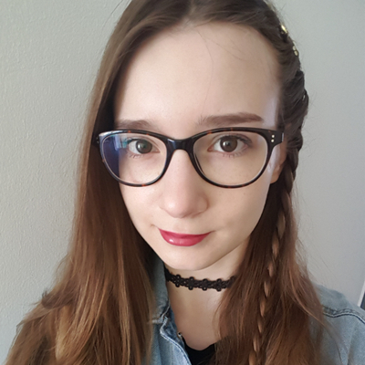
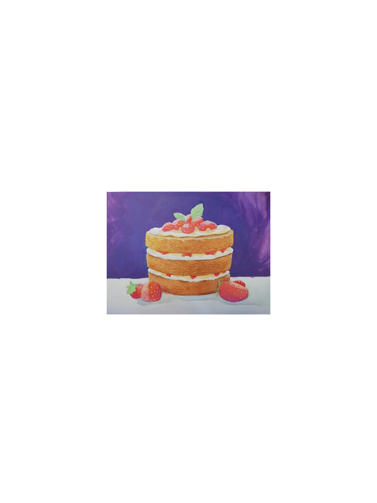
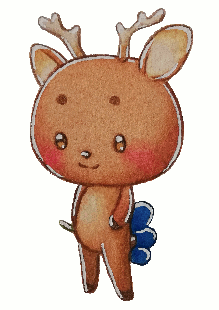
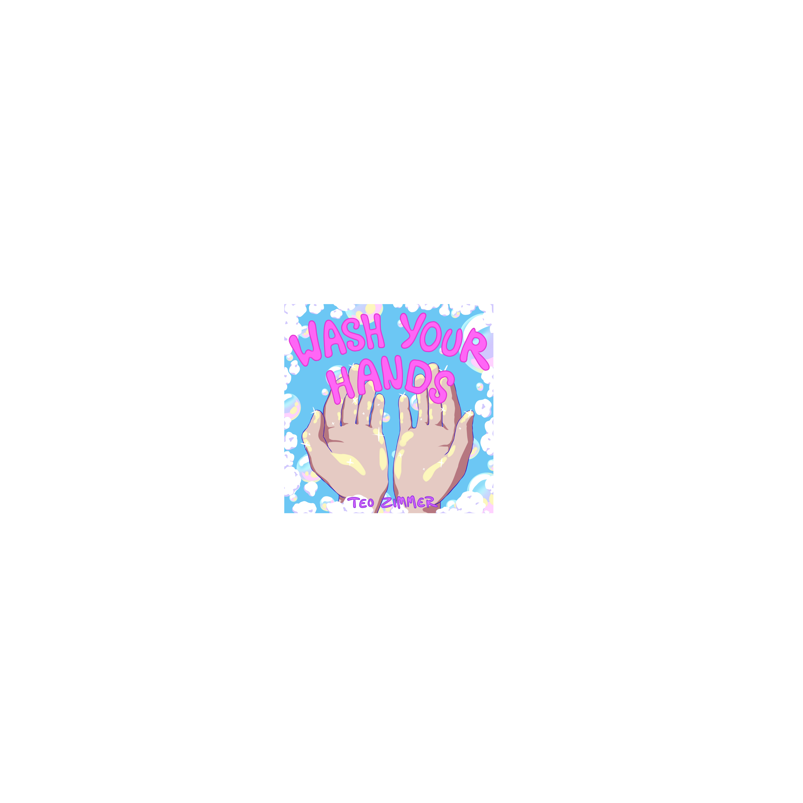
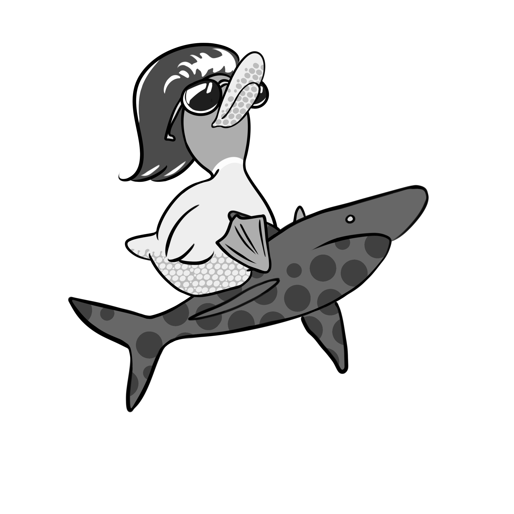
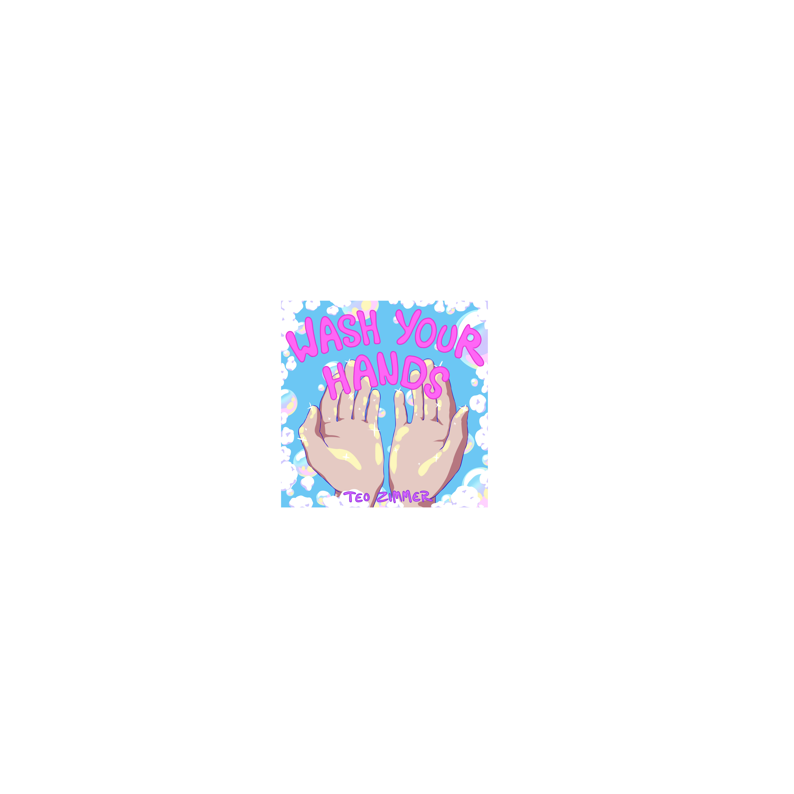
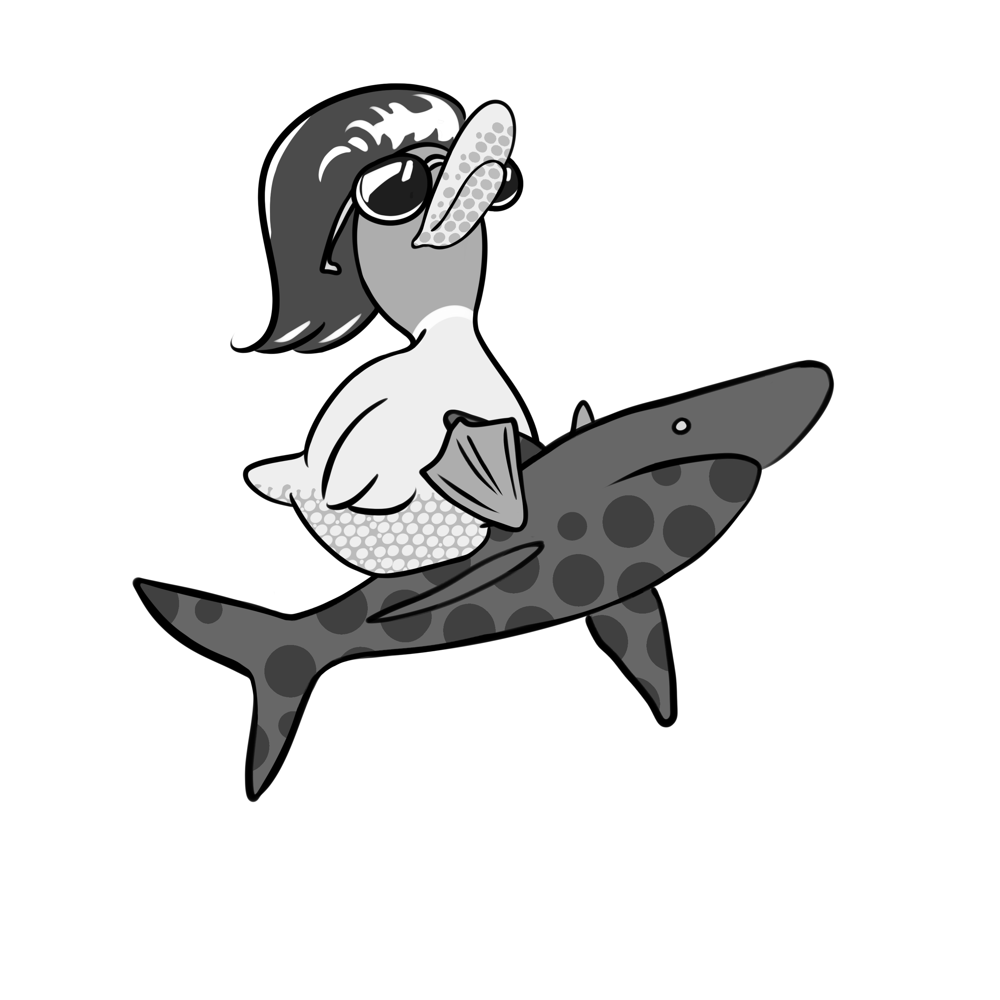

About
Please contact me via this email for commissions and collaborations:
KatiRenArt@gmail.com
Art Gallery
story related: - the little witch - food? 
desserts
- bamboo - cute animals:  Deer: bunny, bear, cat, ... - landscapes - perspective - digital collaborations - fun projects - anki digital icons: ...the best
- Music Collaborations:


...the best
- Music Collaborations:


Social Links

You can find different projects like complete artworks, but also exercises and studies on my instagram account.
I also keep up with news about the stream there!

Visit my art stream to join our cozy community!
We love talking about art, different books and comics, food and every day life. I always try to explain the progress of the exercises and projects and hope to get people interested in being creative themselves!
We love talking about art, different books and comics, food and every day life. I always try to explain the progress of the exercises and projects and hope to get people interested in being creative themselves!

I am still working on the videos to come on my YouTube channel.
I am planning to creade art related talks about topics I care about, as well as speedpaints.
I will keep you up to date!